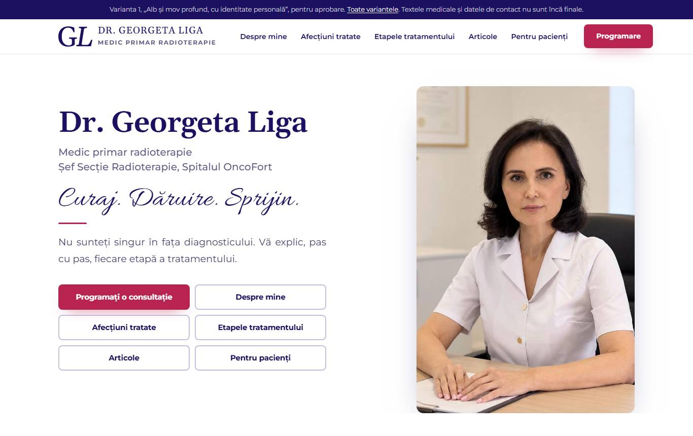
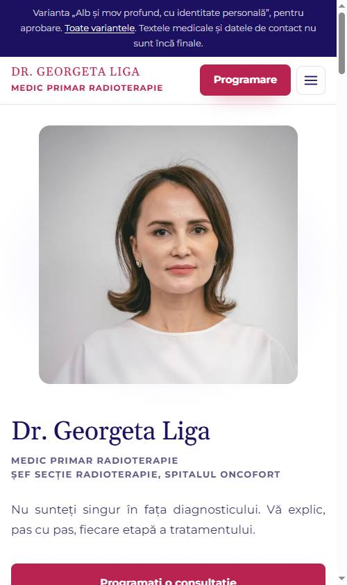
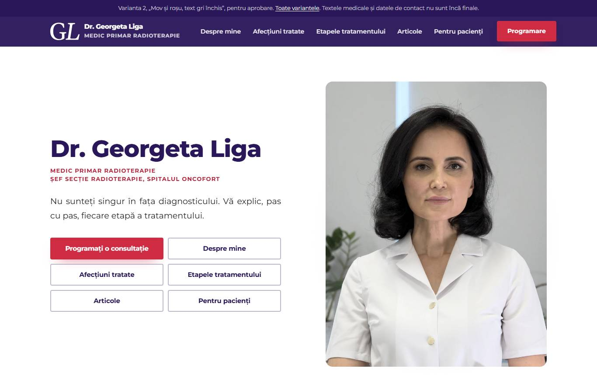
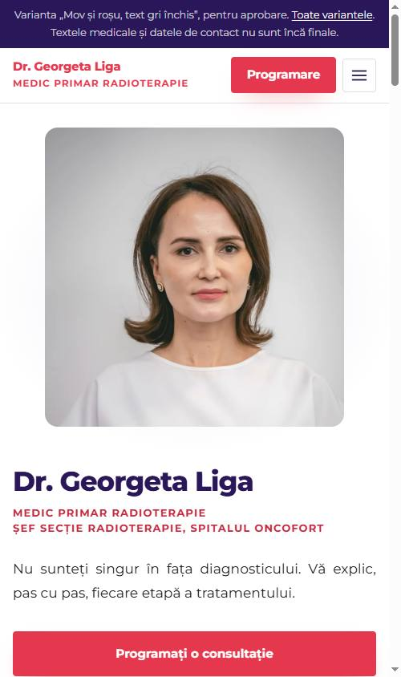
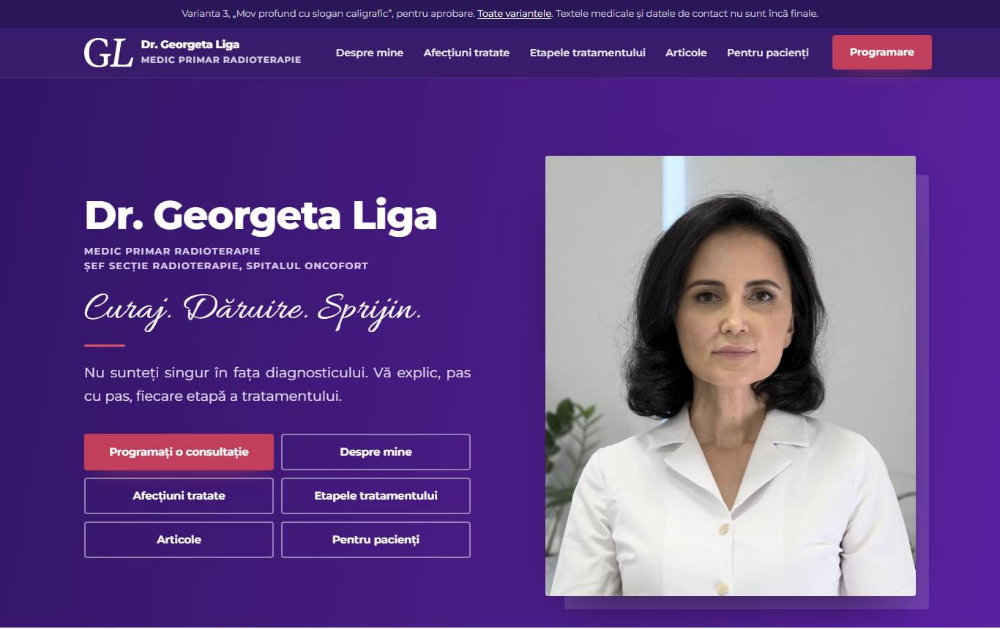
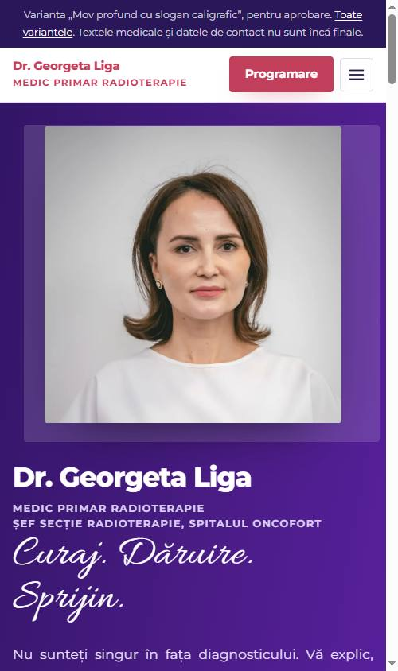

georgetaliga.ro · versiune de lucru, pentru aprobare · octombrie 2026
Fiecare variantă este site-ul întreg, cu toate paginile, articolele și diagnosticele, ca să îl puteți răsfoi exact cum îl vor vedea pacienții, pe telefon și pe calculator. Textele și datele de contact sunt cele de pe versiunea de lucru și nu sunt încă finale.
Alegeți varianta care vă place și trimiteți-i lui Vladimir numărul ei pe WhatsApp. Dacă vreți o combinație între ele, spuneți ce anume vă place la fiecare.
Macheta pe care ați ales-o pe 12 octombrie: fundal alb, titluri mov profund, numele scris cu serife în antet și pe prima pagină, portretul imediat sub antet, butoane roșu zmeură.


După indicațiile dumneavoastră din 12 octombrie: textul gri închis, roșu la butoane și la titlurile de rubrici, mov profund la antet și la subsol, fundalul gri păstrat la secțiunile deschise.


Pornind de la fișierele pe care le-ați făcut dumneavoastră pe 12 octombrie: prima pagină se deschide pe mov profund, cu sloganul „Curaj. Dăruire. Sprijin.”, buton roșu și portretul în ramă. Restul paginilor rămân deschise, pe alb și lavandă.

